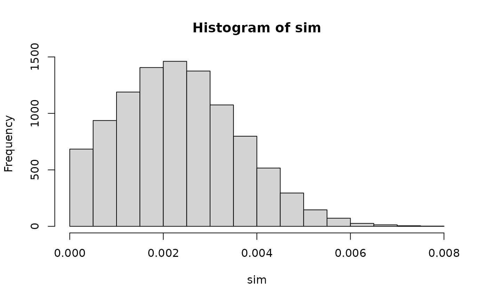
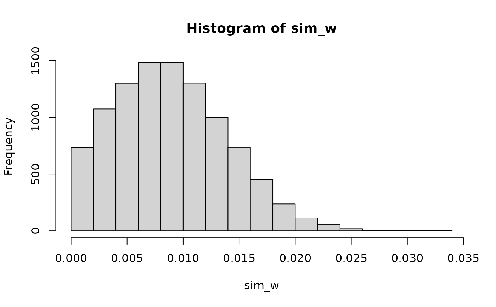

Simulate marine survival
make_marine_s.RdSimulate marine survival from the built-in
life_stage_survival dataset using a truncated normal
distribution (Nieland and Sheehan 2020). For hatchery fish, smolt survival
is based on empirical results from Stich et al. (2015a, 2015c) and adult
returns based on MDMR (2018). For wild fish, estimate is based on
smolt-to-adult returns in the Narraguagus River (USASAC 2018).
Arguments
- n
Number of samples
- a
Lower limit of truncated normal
- b
Upper limit of truncated normal
- mean
Mean of distribution. When `mean = NULL` (default), the mean value is parameterized from the built-in
life_stage_survivaldataset.- sd
Standard deviation of distribution. When `mean = NULL` (default), the mean value is parameterized from the built-in
life_stage_survivaldataset.- hatchery
A logical indicating whether the estimate is for hatchery-reared fish (`TRUE`) or wild fish (`FALSE`).
References
Nieland JL, Sheehan TF. 2020. Quantifying the Effects of Dams on Atlantic Salmon in the Penobscot River Watershed, with a Focus on Weldon Dam. US Department of Commerce, Northeast Fisheries Science Center Reference Document 19-16, Woods Hole, MA.
Stich DS, Bailey MM, Holbrook CM, Kinnison MT, Zydlewski JD. 2015a. Catchment-wide survival of wild- and hatchery-reared Atlantic salmon smolts in a changing system. Canadian Journal of Fisheries and Aquatic Sciences 72:1352–1365.
Stich DS, Zydlewski GB, Kocik JF, Zydlewski JD. 2015c. Linking behavior, physiology, and survival of Atlantic salmon smolts during estuary migration. Marine and Coastal Fisheries 7:68–86.
USASAC (US Atlantic Salmon Assessment Committee). 2018. Annual Report of the US Atlantic Salmon Assessment Committee, Report No. 30 - 2017 Activities, Portland, ME.
Examples
# 1. Single value for hatchery fish ----
make_marine_s(hatchery = TRUE)
#> [1] 0.003050486
# 2. Ten thousand values of marine S for hatchery fish ----
sim <- make_marine_s(n = 1e4, hatchery = TRUE)
hist(sim)

# 3. Single value for wild fish ----
make_marine_s(hatchery = FALSE)
#> [1] 0.01182674
# 4. Ten thousand values of marine S for wild fish ----
sim_w <- make_marine_s(n = 1e4, hatchery = FALSE)
hist(sim_w)
